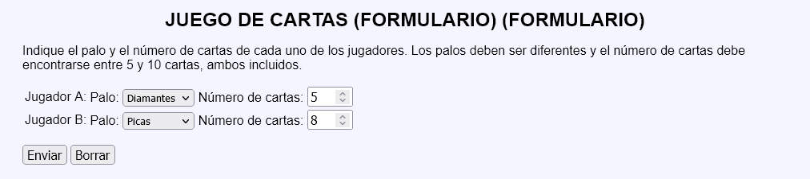

En este ejercicio se debe crear un programa que simule una partida de un juego de cartas. En este juego cada jugador saca un número de cartas numeradas correlativamente al azar. Habrá conseguido su objetivo si, al sacar alguna de las cartas, el número de orden coincide con el número de la carta. Gana el juego el jugador que haya conseguido su objetivo cuando el otro jugador no lo ha conseguido.
Nota:: El juego es casi equilibrado aunque el número de cartas no coincida, ya que la probabilidad de no conseguir el objetivo es casi del 36,8% a partir de 5 cartas (exactamente !n/n! siendo n el número de cartas).
Juego de cartas - Comentarios
El programa tendrá dos páginas:
La primera página muestra un formulario con cuatro controles, dos para cada jugador:
El palo de las cartas (corazones, diamantes, picas o tréboles).
El número de cartas (de 5 a 10 cartas).
La segunda página mostrará:
El número de cartas indicado de cada jugador, del palo indicado, ordenadas al azar.
El resultado de la partida, indicando en su caso el valor de la primera carta cuya posición coincide.
Si se intenta acceder directamente a la segunda página sin pasar por la primera o si se envía a la segunda página información distinta a la esperada, se mostrarán mensajes de error con la información faltante o incorrecta.
Los palos de los jugadores deben ser distintos.
No se deben cambiar los nombres de los controles incluidos en las plantillas.
Al actualizar la segunda página, se mostrará una partida distinta, pero sin modificarse el número de cartas y el palo de ningún jugador.
Capturas de pantalla de ejemplo:

Juego de cartas - Ejemplo de código HTML
<p>
<span style="font-size: 300%; vertical-align: top;">A:</span>
<img src="img/cartas/d4.svg" alt="4 de diamantes" width="80">
<img src="img/cartas/d6.svg" alt="6 de diamantes" width="80">
<img src="img/cartas/d3.svg" alt="3 de diamantes" width="80">
...
<img src="img/cartas/d7.svg" alt="7 de diamantes" width="80">
</p>
<p>
<span style="font-size: 300%; vertical-align: top;">B:</span>
<img src="img/cartas/p3.svg" alt="3 de picas" width="80">
<img src="img/cartas/p1.svg" alt="1 de picas" width="80">
...
<img src="img/cartas/p4.svg" alt="4 de picas" width="80">
</p>
<p>Ha ganado A porque ha coincidido al menos la carta <strong>3</strong>, pero no ha coincidido ninguna carta del jugador B.</p>